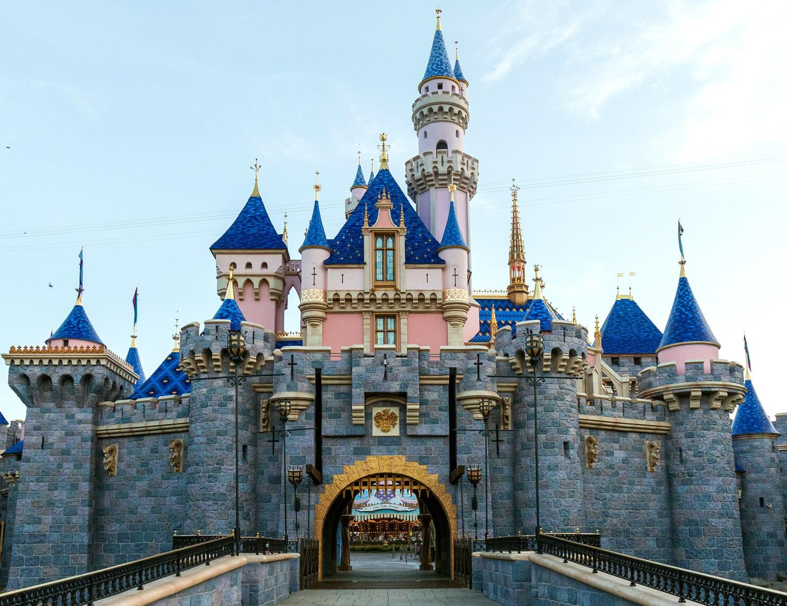

Located in the heart of Anaheim, California, Disneyland is a magical theme park envisioned by Walt Disney. Since its grand opening on July 17, 1955, this theme park has welcomed many guests into a place where dreams come true. As you enter the park you are greeted by wholesome workers into a vibrant and enchanting atmosphere. Disneyland transports you into a place where fairytales unfold and characters become real. Every visitor is promised to have a unique experience in the various attractions the theme park has to offer.
At Disneyland, every step is a journey into a new world of experiences from Sleeping Beauty Castle to Tomorrowland. It is a place where magic and imagination intertwine. The meticulous design of the park is a deliberate effort to transport visitors into alternate worlds, Tomorrowland takes guests into a futuristic atmosphere. Along with this unique journey throughout the park characters like Mickey Mouse and Cinderella come to life. The spectacular parades also add to the magical experience. The park also offers delectable treats that can be enjoyed by all ages and cultures.
Disneyland is truly a place where dreams come true and guests are encouraged to embrace their imagination. The park's attention to detail and commitment to creating a unique and immersive environment sets it apart from others. The parades, fireworks, and characters in Disneyland continue to captivate the hearts of millions. The park serves as a testament to Walt Disney’s vision of a place where dreams come true.
